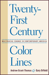

|
A is for Art Museum
Friedland, Katy and Marla K. Shoemaker
From the Philadelphia Museum of Art, a fun-filled primer for children and grown-ups to share
64 pp • 8.25x8.25 • Fall 2008
cloth 1-59213-963-9
EAN 978-1-59213-963-7 |

|
The African Transformation of Western Medicine and the Dynamics of Global Cultural Exchange
Baronov, David
How Western medicine has transformed—and been transformed by—African culture
264 pp • 6x9 • Fall 2008
cloth 1-59213-915-9
EAN 978-1-59213-915-6 |
|
Animals at Play
Rules of the Game
Bekoff, Marc, illustrations by Michael J. DiMotta
What can we learn from watching animals play?
32 pp • 10x7 • Fall 2008
cloth 1-59213-551-X
EAN 978-1-59213-551-6 |
|
The Boxing Scene
Hauser, Thomas
From the bestselling author, an insider’s look into a year of “the sweet science”
256 pp • 6x9 • Fall 2008
paper 1-59213-977-9
EAN 978-1-59213-977-4
cloth 1-59213-976-0
EAN 978-1-59213-976-7 |
|
The Brazilian Sound
Samba, Bossa Nova, and the Popular Music of Brazil
McGowan, Chris and Ricardo Pessanha
An encyclopedia survey of Brazilian popular music—now updated and expanded
Revised and Expanded Edition
280 pp • 7x10 • Fall 2008
paper 1-59213-929-9
EAN 978-1-59213-929-3
cloth 1-59213-928-0
EAN 978-1-59213-928-6 |
|
Caribbean Migration to Western Europe and the United States
Essays on Incorporation, Identity, and Citizenship
edited by Cervantes-Rodriguez, Margarita, Ramon Grosfoguel and Eric Mielants
A novel and interdisciplinary volume on the dynamics of migration with comparative case studies of the Caribbean experience
270 pp • 6x9 • Fall 2008
cloth 1-59213-954-X
EAN 978-1-59213-954-5 |
|
Chinese Connections
Critical Perspectives on Film, Identity, and Diaspora
edited by Tan, See-Kam, Peter X. Feng and Gina Marchetti
How Chinese cinema and global Chinese culture intersect over questions of identity
320 pp • 6x9 • Fall 2008
paper 1-59213-268-5
EAN 978-1-59213-268-3
cloth 1-59213-267-7
EAN 978-1-59123-267-6 |
|
The Delinquent Girl
edited by Zahn, Margaret A.
A major study defining the delinquent girl, the crimes she commits and why she commits them
360 pp • 6x9 • Fall 2008
cloth 1-59213-951-5
EAN 978-1-59213-951-4 |
|
The End of Empires
African Americans and India
Horne, Gerald
A trailblazing book that details the close historic ties between Black America and India over the decades
274 pp • 6x9 • Fall 2008
cloth 1-59213-899-3
EAN 978-1-59213-899-9 |
|
Frankie Manning
Ambassador of Lindy Hop
Manning, Frankie, and Cynthia R. Millman
The autobiography of a legendary swing dancer-who is still swinging
New in Paperback!
312 pp • 6x9 • Fall 2008
paper 1-59213-564-1
EAN 978-1-59213-564-6
|
|
Going Global
Culture, Gender, and Authority in the Japanese Subsidiary of an American Corporation
Fuller, Ellen V.
How culture and gender become weapons in the evaluation of both Japanese and female employees at an American company in Japan
232 pp • 5.5x8.25 • Fall 2008
paper 1-59213-689-3
EAN 978-1-59213-689-6
cloth 1-59213-688-5
EAN 978-1-59213-688-9 |
|
Hapa Girl
A Memoir
Chai, May-lee
A vivid depiction of the racism suffered by a mixed-race family in rural South Dakota
New in Paperback!
232 pp • 5.25x8.25 • Fall 2008
paper 1-59213-616-8
EAN 978-1-59213-616-2 |
|
The Historiography of Communism
Brown, Michael E.
A major reorientation of scholarly thought about communism and contemporary social movements
264 pp • 6x9 • Fall 2008
paper 1-59213-922-1
EAN 978-1-59213-922-4
cloth 1-59213-921-3
EAN 978-1-59213-921-7 |
|
Legacy and Legitimacy
Black Americans and the Supreme Court
Clawson, Rosalee A. and Eric N. Waltenburg
The first comprehensive examination of Black Americans’ attitudes toward the Supreme Court
232 pp • 5.25x8.25 • Fall 2008
paper 1-59213-903-5
EAN 978-1-59213-903-3
cloth 1-59213-902-7
EAN 978-1-59213-902-6 |
|
A Moral Military
Axinn, Sidney
A new edition of the classic book on what constitutes moral behavior during wartime
Revised and Expanded Edition
256 pp • 6x9 • Fall 2008
paper 1-59213-958-2
EAN 978-1-59213-958-3
cloth 1-59213-957-4
EAN 978-1-59213-957-6 |

|
Muhammad Ali
The Making of an Icon
Ezra, Michael
A look at the commercial intrigue that surrounds Muhammad Ali in and out of the ring
248 pp • 6x9 • Fall 2008
paper 1-59213-662-1
EAN 978-1-59213-662-9
cloth 1-59213-661-3
EAN 978-1-59213-661-2 |
|
Musicians from a Different Shore
Asians and Asian Americans in Classical Music
Yoshihara, Mari
Why do so many Asians devote their lives to playing Western classical music?
New in Paperback!
288 pp • 6x9 • Fall 2008
paper 1-59213-333-9
EAN 978-1-59213-333-8 |
|
Pinoy Capital
The Filipino Nation in Daly City
Vergara, Jr., Benito M.
Examining the double lives of Filipino American immigrants
232 pp • 6x9 • Fall 2008
paper 1-59213-665-6
EAN 978-1-59213-665-0
cloth 1-59213-664-8
EAN 978-1-59213-664-3 |
|
Race and Class Matters at an Elite College
Aries, Elizabeth
How race and class collide at a prestigious liberal arts college
246 pp • 6x9 • Fall 2008
paper 1-59213-726-1
EAN 978-1-59213-726-8
cloth 1-59213-725-3
EAN 978-1-59213-725-1 |
|
Restructuring the Philadelphia Region
Metropolitan Divisions and Inequality
Adams, Carolyn, David W. Bartelt, David Elesh and Ira Goldstein with Michelle Schmitt and Joshua Freely
Looking for regional solutions to local limitations of opportunity in education, jobs and housing
248 pp • 6x9 • Fall 2008
paper 1-59213-897-7
EAN 978-1-59213-897-5
cloth 1-59213-896-9
EAN 978-1-59213-896-8 |
|
Sounds of the Modern Nation
Music, Culture, and Ideas in Post-Revolutionary Mexico
Madrid, Alejandro L.
How the relationships between avant-garde music and ideas of modernity in post-revolutionary Mexico shaped discourses of nationality
224 pp • 5.5x8.25 • Fall 2008
cloth 1-59213-694-X
EAN 978-1-59213-694-0 |
|
The Story Is True
The Art and Meaning of Telling Stories
Jackson, Bruce
How true stories, almost true stories, urban legends, myths and even outright lies captivate us and bind us together
New in Paperback!
256 pp • 5.25x5.25• Fall 2008
paper 1-59213-607-9
EAN 978-1-59213-607-0 |
|
Swimming Against the Tide
African American Girls and Science Education
Hanson, Sandra L.
Following African American women who “swim against the tide” in the white male science education system
224 pp • 5.5x8.25 • Fall 2008
cloth 1-59213-621-4
EAN 978-1-59213-621-6 |
|
Technological Turf Wars
A Case Study of the Computer Antivirus Industry
Johnston, Jessica
Exploring computer security as both a social and technical problem
232 pp • 5.5x8.25 • Fall 2008
paper 1-59213-882-9
EAN 978-1-59213-882-1
cloth 1-59213-881-0
EAN 978-1-59213-881-4
|
|
Telling Young Lives
Portraits of Global Youth
edited by Jeffrey, Craig and Jane Dyson
Examines the changing political and social strategies of contemporary young people around the globe
232 pp • 6x9 • Fall 2008
paper 1-59213-931-0
EAN 978-1-59213-931-6
cloth 1-59213-930-2
EAN 978-1-59213-930-9 |
|
Theorizing Discrimination in an Era of Contested Prejudice
Discrimination in the United States
Lucas, Samuel Roundfield
Offers a fresh, important new understanding of racial and sexual discrimination
296 pp • 6x9 • Fall 2008
cloth 1-59213-912-4
EAN 978-1-59213-912-5 |
|
Thinking Your Way to Freedom
A Guide to Owning Your Own Practical Reasoning
Gardner, Susan T., illustrations by Dirk van Stralen
An appealing new guide to critical thinking for college students
296 pp • 8.5x11 • Fall 2008
paper 1-59213-867-5
EAN 978-1-59213-867-8
|
 |
Twenty-First Century Color Lines
Multiracial Change in Contemporary America
edited by Grant-Thomas, Andrew and Gary Orfield, foreword by Christopher Edley, Jr.
Exploring the multiracial, multiethnic “line” for the new century
328 pp • 6x9 • Fall 2008
paper 1-59213-692-3
EAN 978-1-59213-692-6
cloth 1-59213-691-5
EAN 978-1-59213-691-9 |
|
Women's Activism and Feminist Agency in Mozambique and Nicaragua
Disney, Jennifer Leigh
Tracking women’s movements through two developing world revolutions and neo-liberal democracies
306 pp • 6x9 • Fall 2008
cloth 1-59213-828-4
EAN 978-1-59213-828-9 |
|
Wrongful Conviction
International Perspectives on Miscarriages of Justice
edited by Huff, C. Ronald and Martin Killias
A cross-national study that shows how various criminal justice systems are susceptible to wrongful convictions
326 pp • 6x9 • Fall 2008
cloth 1-59213-645-1
EAN 978-1-59213-645-2 |
Click here
to download the catalog (pdf). |